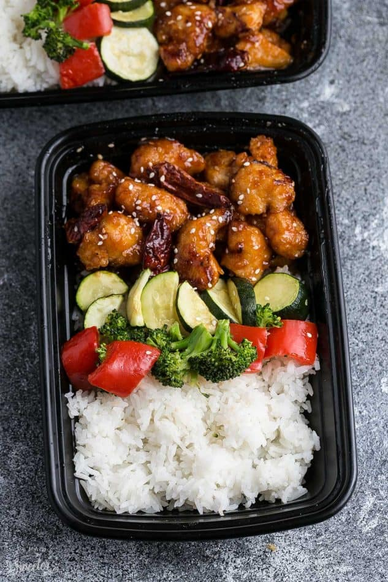

General Tso's Chicken

Description
General Tso's Chicken made in a slow cooker is the perfect easy weeknight meal.
Best of all, this healthier recipe for a popular takeout dish has the same amazing
flavors as your local Chinese restaurant. Made in your crock-pot or Instant Pot
pressure cooker!
Enjoy the General Tso’s chicken alone or serve it with some quinoa, rice or even
zoodles or cauliflower rice for a lower carb option.
Ingredients
- 2 tbsp cornstarch
- 1/8 tsp salt
- 1/4 tsp black pepper
- 1-1/4 lbs boneless skinless chicken breast (cut into bite-sized chunks)
- 3-4 tbsp cooking oil
- 4-5 dried red chili peppers to taste
- Toasted sesame seeds and chopped green onions for garnish
Sauce:
- 1/3 cup low sodium soy sauce
- 1/3 cup water
- 2 tbsp honey
- 2 tbsp Hoisin sauce
- 1-1/2 tps toasted sesame oil
- 1 tbsp apple cider vinegar
- 2 tbsp tomato paste
- 3 cloves of garlic minced
- 1 tsp grated fresh ginger
- 1/4 tsp dried red pepper chili flakes
Instructions
-
In a large bowl, combine chicken, cornstarch, salt, and black pepper
until well coated. Set aside.
-
Make the sauce. In a medium bowl, whisk together all the Ingredients
for the sauce. Set aside.
-
Heat oil in a large skilled over medium-high heat. Cook chicken in batches
about 2-3 minutes on each side, until lightly browned. Transfer chicken to
slow cooker. Pour sauce over top.
-
Cover and cook on LOW for 2.5 - 4 hours or on HIGH for 1.5 - 3 hours.
-
About 30 minutes before serving, whisk together the cornstarch and water in
a small bowl and very gently stir into the slow cooker. Toss in the dried
red peppers. Cover and cook on HIGH for another 20 - 30 minutes or until the
sauce has thickened up.
-
Sprinkle with sesame seeds, green onions amd serve over rice, quinoa or
zoodles if desired.